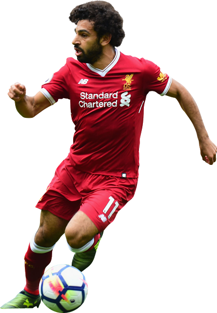

<!--
  Generated template for the TopScorersPage page.

  See http://ionicframework.com/docs/components/#navigation for more info on
  Ionic pages and navigation.
-->
<ion-header>
  <ion-navbar>
    <ion-title>TopScorers</ion-title>
  </ion-navbar>
</ion-header>

<ion-content padding class ="background">
    <br><br>
    <h3 ion-text color="white">
    TopScorers in the League
  </h3> 
  <br><br>
  
  <br><br>
  <br>Name: Mo Salah<br>
  <br><br>
  <br>Goals: 53<br>
  <br><br>
  <br>Assists: 18<br>
  <br><br>
  <br>Club: Liverpool<br>
  <br><br>
  <br>Appearances: 84<br>
  


  <br><br><br>
  <ol><li ion-button color="green" (click)="openLeagueTable3()" class="button1">Next Page</li> </ol>
  <ol><li ion-button color="danger" (click)="backToLeagueTable()" class="button1">Back</li> </ol>

</ion-content>
